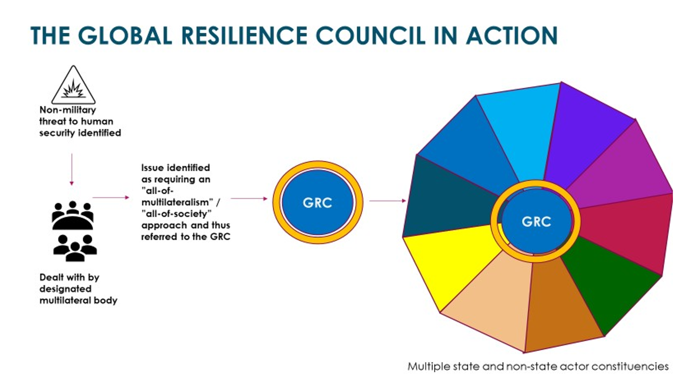
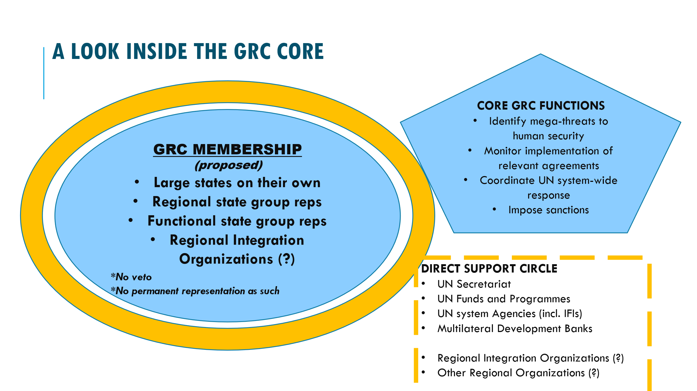
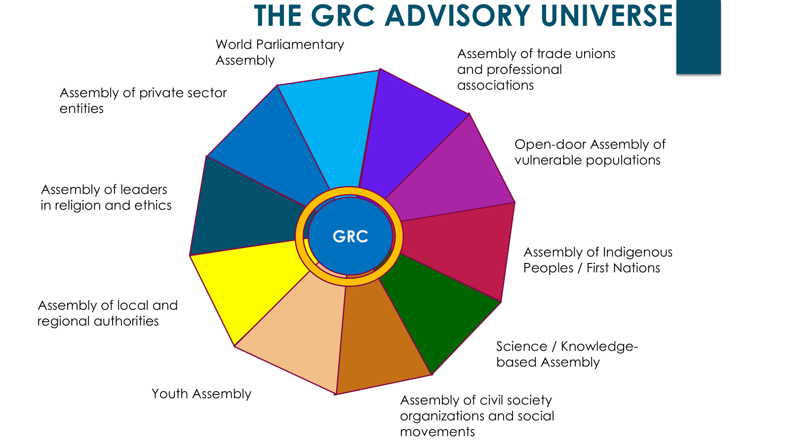

Global Resilience Council (GRC)
A "Security Council" for non-military threats.
Overview
The global governance system built after World War II was designed around specialised agencies, each focused on a single sector. This structure works well for routine international cooperation, but it cannot mount a coordinated response when crises cross sectoral boundaries — as pandemics, climate change, and financial shocks routinely do.
The Global Resilience Council (GRC) project addressed this gap directly. Developed by FOGGS between 2020 and 2022, it proposed a new UN body that would function as a kind of "Security Council" for non-military threats — with the authority and cross-system reach to coordinate responses to major global crises that no single agency can handle alone; see the GRC proposal in a nutshell below.
Short Video Explainer
The GRC proposal in a nutshell
FOGGS has proposed the establishment of a “Global Resilience Council” (GRC), as a parallel body to the UN Security Council with a mandate to address non-military threats to human security, such as climate change and pandemics. The proposed Council would bring together a limited number of states and regional organisations as core members, alongside observers from UN agencies, global civil society and business, scientific and religious bodies. Crucially, it would have enforcement capacity to back collective decisions with consequences, closing the accountability gap that allows countries and other actors to sign on commitments and then ignore them in practice. Issues would be brought to the GRC for “whole-of-multilateralism” decisive action once it was broadly established that the relevant specialized body or bodies dealing with them on a daily basis could not tackle the respective human security crises on their own.



Further Developments of the GRC Proposal
The GRC proposal is part of the UN2100 Initiative of FOGGS and was initially put forward in the summer of 2020, in view of the UN's underwhelming response to the Covid-19 global emergency. It acquired renewed relevance in the context of the UN reform process initiated by UN member states through their Declaration on the 75th anniversary of the United Nations in September 2020 and was revisited in the summer of 2021. It became part of the discussions on making the UN fit for the future that were set in motion by the UN Secretary-General's September 2021 report Our Common Agenda, including through a critical review of the report.
The GRC proposal was also advanced through public and expert meetings: in 2021, the Online Debate: A New Narrative of Hope and a Global Resilience Council for UN75+25 helped introduce the idea to a wider audience; in January 2022, FOGGS convened the GRC Policy Roundtable — UN Missions & Think Tanks to discuss reform pathways ahead of the Summit of the Future; in February 2022, the GRC Policy Roundtable — Civil Society, Science & Private Sector probed the GRC's design and mandate; and in March 2022, the Public Webinar: A New Approach to Non-Military Threats to Human Security examined the case for a new multilateral body to address non-military threats to human security. Two issue-specific papers, focusing on climate and global health respectively, examined how a Global Resilience Council would strengthen multilateral responses to multidimensional and interconnected human security crises.
Before the UN Summit of the Future, held in September 2024, the GRC proposal was revisited in collaboration with FOGGS South African partners ISI and IGD, recasting the GRC as a possible subsidiary body of the UN's Economic and Social Council (ECOSOC). No structural reforms were approved by UN member states at the Summit of the Future, as reflected in the Summit's outcome, The Pact for the Future. The GRC idea, though, in its successive iterations and through publications by FOGGS and others around the world, remains on record as an inspiration for future UN reform efforts.
Legacy
The GRC proposal contributed to a period of active debate on UN reform, coinciding with preparations for the 2024 Summit of the Future and the broader discussions prompted by the Secretary-General’s Our Common Agenda. The idea of a dedicated multilateral body for non-military crises was taken up in various policy circles, and the FOGGS framing — a "Security Council" for non-military threats — helped sharpen the terms of that conversation.
The fundamental challenge the GRC identified remains unresolved: the international community still lacks a body with the cross-system authority and accountability mechanisms needed to coordinate responses to the defining crises of the 21st century.
Publications
FOGGS Papers
- Resilience Council Proposal (vs24Nov2020)
- “A ‘Global Resilience Council’: Why and If Yes, How?” — Brainstorming Note (March 2021)
- A 'Security Council' to Deal with Non-Military Global Threats: The Global Resilience Council Revisited — by Harris Gleckman and Georgios Kostakos (June 2021)
- FOGGS GRC Revisited Slides FINAL 23June2021
- Global Governance and 'Our Common Agenda': A Critical Review — Discussion Paper by Harris Gleckman and Georgios Kostakos (November 2021)
- How Is the Multilateral System Failing to Deal with the Climate Crisis, and Why There Is a Need for a Global Resilience Council — Discussion Paper by Stuart Best (April 2022)
- Why Is the Multilateral System Unable to Effectively Deal with Global Health Crises, and Why There Is a Need for a Global Resilience Council — Discussion Paper by Neena Joshi (June 2022)
- FOGGS proposal submitted to UN HLAB on a Global Resilience Council (August 2022)
- “Global Resilience Council and a Rebalancing of the Global Governance System” — Concept Paper (August 2024)
For the full archive of GRC papers and statements, see the Publications page.
External References
The Lancet COVID-19 Commission
World's foremost peer-reviewed medical journal · est. 1823
Global Diplomacy and Cooperation in Pandemic Times: Lessons and Recommendations from COVID-19
Global Solutions Initiative / Think7
Think tank engagement group for the G7
Think7 (T7) Communiqué — Policy recommendations for the G7 Summit in Elmau
T20 South Africa
Think20 policy dialogue for the G20
Revitalising ECOSOC: Advancing the SDGs — Why the G20 Matters Now
- Reform Options for Effective UN Sustainable Development Governance — German Council for Sustainable Development (2021)
- Improving Responses to Global Shocks: Recommendations for the Our Common Agenda Process — Development and Peace Foundation (2021)
- Fulfilling the UN75 Declaration's Promise: Expert Series Synthesis — Club de Madrid (2021)
- Global Diplomacy and Cooperation in Pandemic Times: Lessons and Recommendations from COVID-19 — The Lancet COVID-19 Commission (2021)
- UN75 Declaration Expert Series Readout #2 — Stimson Center (2021)
- Towards a Global Environment Agency: Effective Governance for Shared Ecological Risks — Global Challenges Foundation (2021)
- Governing Our Climate Future — Interim Report — Climate Governance Commission (2021)
- New Shape Forum presentation by Georgios Kostakos — Global Challenges Foundation (2021)
- Interview with Georgios Kostakos on the Climate Summit (COP26) — Athens Voice (2021)
- Communiqué — T7 Summit (Berlin, 23–24 May 2022) — Think7 / T7 (2022)
- Revitalising ECOSOC: Advancing the SDGs — Why the G20 Matters Now — T20 South Africa (2025)
Funding
The Global Resilience Council initiative was supported by the Global Challenges Foundation.

The Global Challenges Foundation is a Stockholm-based non-profit organisation dedicated to promoting the creation and development of improved global decision-making models aimed at reducing and mitigating global catastrophic risks. Its vision is a world in which effective and fair mitigation of global catastrophic risks secures a safe and just future for all. To that end, the Foundation raises awareness of significant risks facing humanity, facilitates constructive dialogue between policymakers, researchers, and experts, promotes networks and initiatives developing governance solutions, and advocates for improved governance of global risks through reform processes. The Foundation only supports activities that are not politically or religiously affiliated.